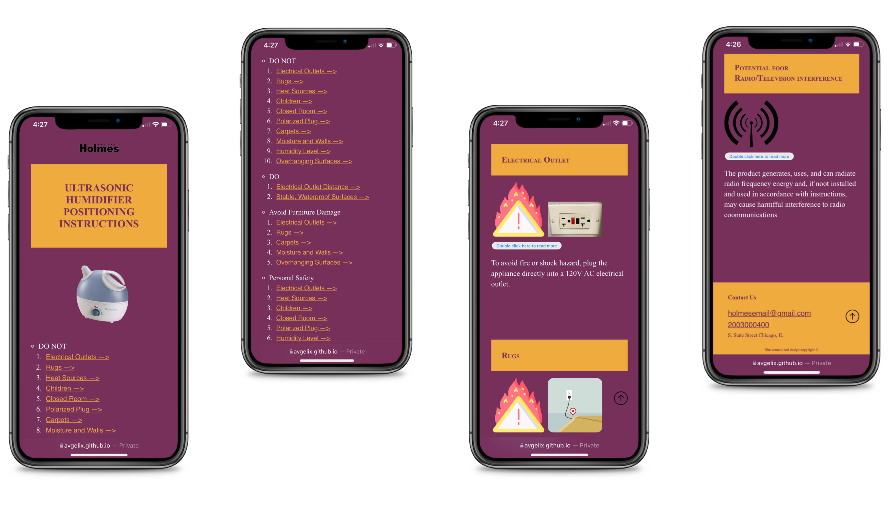
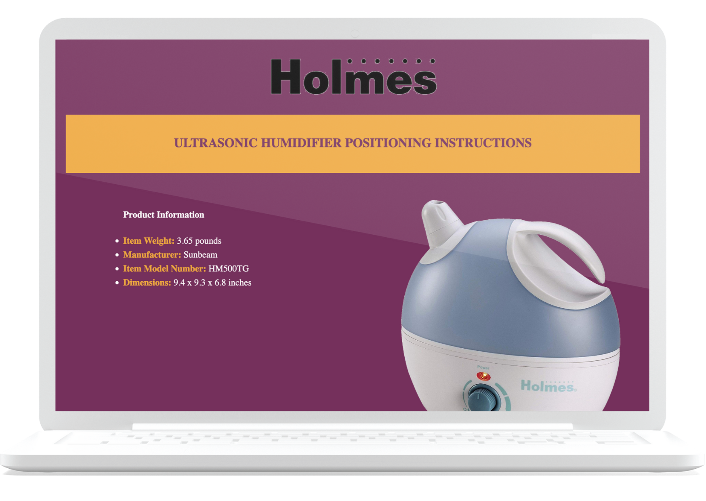
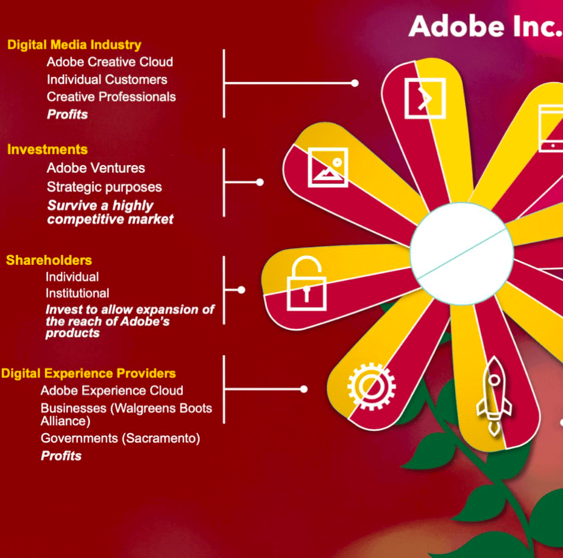

Portfolio: Angela Petrone
Home
Resume
Portfolio
UX Case Studies


I conducted some individual User Experience case studies, implementing different research methods, rapid prototyping, and functioning UI
Design
Game Design is one of my major specializations. This allows me to directly try my hand at storytelling, narrative and graphic design
Programming
I programmed more than 6 apps using JavaScript in my CS110 class at Illinois Tech
Research

My research digs into my own interests and reflects my passion for aesthetics
Digital Media
Instagram business profiles, LinkedIn pages, LinkTree, Google Sites, Wordpress, Canva, Figma, Google Sheets: you name it, I've used it to design and distribute branded content on digital platforms.
Journalism
I have more than 6 years of newsroom experience. I've been producing features, news articles, opinion pieces, reviews, and articles in various tones, for both personal and academic projects.
Academic Essays
I produce essays on a regular basis, which demonstrate my research effrorts in my fields of interest, and a good aptitude at academic writing.
Fiction
I write in a lot of different forms. Short stories, fiction pieces, in the language of my heart.
Poetry
I have been writing poetry on this little journal since I was 14. I have written in three languages, on paper, on my phone, in every continent, at every time of the day.